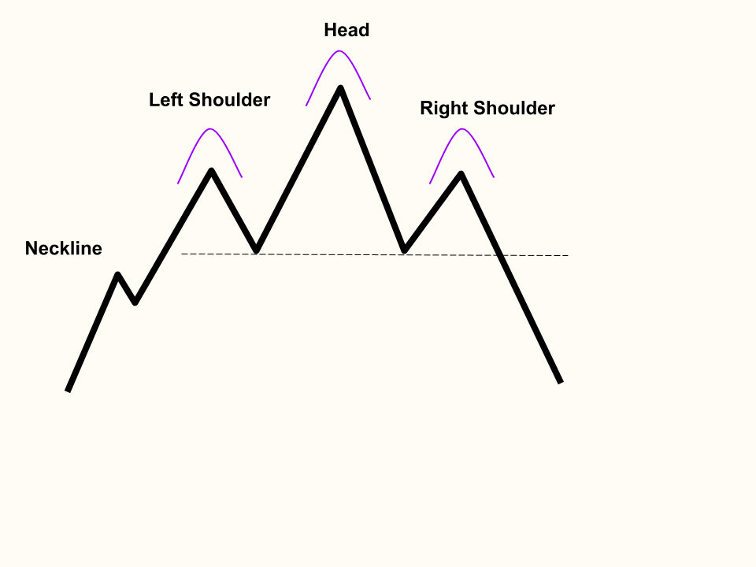

Triple Bottoms
The neckline is formed by the rejections off left shoulder and head formation
The left shoulder is formed by a small low into a bounce
The head is formed after the left shoulder is formed with a lower low and same high
The right shoulder is formed after the head formation is completed with a rejection off the neckline

Triple Tops
The neckline is formed by the bounces off left shoulder and head formation
The left shoulder is formed by a small peak into a rejection
The head is formed after the left shoulder is formed with higher high and same low
The right shoulder is formed after the head formation is completed with a bounce off the neckline
Back to Homepage
Forward to Diamond Tops and Bottoms